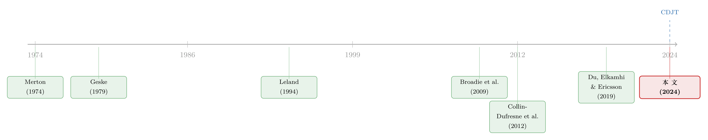

股与债，真的「各说各话」吗？——一个结构模型如何为期权市场的「不一致」翻案
本文读的是 Doshi, Ericsson, Fournier & Seo (2024, Journal of Financial Economics)：作者从公司资产的动态出发，搭起一个能同时给股票指数、信用指数、以及二者的期权定价的结构化信用风险模型。用它去看市场，会发现一个近年广为流传的结论——「股票期权（SPX options）和信用指数期权（CDX options）定价互相矛盾、市场没有整合」——其实站不住脚。两类期权的回报虽然「极端」，却并不构成误定价 (mispricing) 的证据；真正的关键，是在估计中把资产风险、方差风险、跳跃风险这三种系统性风险分别归位。
1 一个让人不安的发现
先讲一个让做衍生品定价的人睡不着觉的故事。
我们有两个市场。一个是股票这一侧——以标普 500 指数 (S&P 500 Index, SPX) 及其期权为代表，这是期权定价文献几十年来的主战场。另一个是信用这一侧——以 CDX 北美投资级指数 (CDX North American Investment Grade Index, CDX) 及其期权（本质上是写在一篮子信用违约互换上的 swaption）为代表，2012 年以后才活跃起来。
按理说，这两个市场背后站着的是同一批公司。股票是这些公司资产的看涨期权，债务是看跌期权的空头（这正是 Merton (1974) 的洞见）；而写在股票、债务上的期权，就是「期权的期权」，即复合期权 (compound option, Geske, 1979)。既然底层资产是同一套东西，那么股与债、以及它们的期权，价格就应当被同一个无套利体系串起来，彼此自洽。
可偏偏，一篇与本文几乎同期的重磅论文——Collin-Dufresne, Junge & Trolle (2024)（下文沿用作者们的简称 CDJT）——给出了一个针锋相对的结论：对不上。CDJT 用一个风险中性资产动态与本文几乎一致的模型去拟合，发现当模型被校准到匹配 SPX 期权的隐含波动率时，它给 CDX 期权生成的隐含波动率太低了。换句话说，市场上 CDX 期权的报价显得「过贵」。由此 CDJT 下了一个相当大胆的判断：股票市场和信用市场没有完全整合。
这是个很重的指控。因为整整一代文献——Cremers et al. (2008)、Carr & Wu (2011)、Collin-Dufresne et al. (2012)、Culp et al. (2018) 等——都在反复论证股票期权和各类信用工具之间的紧密联系。如果 CDJT 对了，这些工作的根基就被动摇了。
于是一个自然的问题是：到底是市场真的「裂开」了，还是我们看市场的那副镜片出了问题？
本文的回答是后者。而要把这个回答讲清楚，得先把那副镜片——一个从公司资产长出来、能一口气给四个市场定价的结构模型——亲手搭起来。
2 把四个市场种在同一棵树上
本文的核心抱负，是「从地基开始 (from the ground up)」一致地给股权、信用及其衍生品定价。所有东西都从单个公司的资产动态生长出来。
2.1 资产与方差风险
考虑横截面上的一批公司 \(j \in \{1,\dots,N\}\)。每家公司的（无杠杆）资产由一个系统性资产因子 \(A_t^m\) 加上两类异质性冲击驱动：
$$\frac{dA_t^j}{A_t^j} = \frac{dA_t^m}{A_t^m} + \sigma^j\,dW_t^j + \nu^j\,dN_t^j - \lambda^j\nu^j\,dt$$
这里 \(dW_t^j\) 是布朗运动、\(dN_t^j\) 是泊松跳跃过程，二者刻画异质性的扩散与跳跃风险。关键在于：异质性风险在模型里被故意「不定价」——它能被分散掉，因而不进入风险溢价。真正被定价的，是大家共担的系统性因子 \(A_t^m\)。
系统性资产因子本身，是一个带随机方差、又带泊松跳跃的过程（设定在 Du et al. (2019) 之上）：
$$\frac{dA_t^m}{A_t^m} = (\mu_t - q)\,dt + \sqrt{V_t}\,dW_t^A + \nu_t^m\,dN_t^m - \lambda_t^m\bar\nu^m\,dt$$
而那个随机方差 \(V_t\)，走的是经典的平方根过程 (square-root process)：
$$dV_t = \kappa(\theta - V_t)\,dt + \delta\sqrt{V_t}\,dW_t^V$$
其中 \(\kappa,\theta,\delta\) 分别是均值回复速度、长期均值、方差的波动率。资产收益与方差冲击之间通过 \(dW_t^A = \rho\,dW_t^V + \sqrt{1-\rho^2}\,dW_t^{A\perp V}\) 相关。当 \(\rho<0\) 时，资产收益低的时候方差高——这给无杠杆市场收益的分布带来负偏度，与实证一致。
2.2 真正关键的一步：同时写下 P 与 Q
到这里都还算常规。但真正关键的一步，在于本文不只写风险中性 (Q) 动态，而是把物理 (P) 动态和风险中性动态一起写下来。二者的桥梁，是经济体的随机贴现因子 (stochastic discount factor, SDF)。作者假设 SDF 对各类系统性风险呈指数仿射形式：
这个 SDF 是全文的「心脏」。它一次性给出了三种系统性风险的价格：\(\xi_{A\perp V}\)（资产增长）、\(\xi_V\)（方差）、\(\xi_m\)（跳跃）。由 Girsanov 定理，这个 SDF 把 P 测度下的动态平移成 Q 测度下的动态：
$$\frac{dA_t^m}{A_t^m} = (r_f - q)\,dt + \sqrt{V_t}\,dW_t^{A,Q} + \nu_t^{m,Q}\,dN_t^{m,Q} - \lambda_t^{m,Q}\bar\nu^{m,Q}\,dt$$
$$dV_t = \kappa^Q(\theta^Q - V_t)\,dt + \delta\sqrt{V_t}\,dW_t^{V,Q}$$
其中 \(\kappa^Q = \kappa + \delta\xi_V\)、\(\theta^Q = \kappa\theta/\kappa^Q\)。方差风险的价格 \(\xi_V\) 直接掰动了方差过程在 Q 下的均值回复——这一点后面会反复用到。
为什么「同时写 P 与 Q」如此要命？因为这让作者能用时间序列里蕴含的物理信息去过滤 (filter) 出状态变量，而不必把状态变量当成每天自由选取的待定参数。这正是本文与 CDJT 在方法论上的分水岭——我们马上会回到这里。
2.3 资产风险溢价：把回报拆成三块
既然 P 和 Q 都在手上，模型就能谈「回报」与「风险溢价」，而不只是定价。把 Eq. (2) 和其 Q 对应式相减，得到无杠杆资产风险溢价：
$$(\mu_t - r_f)\,dt = \left(\sqrt{1-\rho^2}\,\xi_{A\perp V} + \rho\,\xi_V\right)V_t\,dt + \lambda_t^m\,\mathbb{E}_{Z^m}\!\left[\left(1-e^{Z_t^m}\right)\left(e^{\xi_m Z_t^m}-1\right)\right]dt$$
第一项是扩散性资产增长与方差风险的补偿，第二项是系统性资产跳跃风险溢价。任何工具（SPX、CDX、以及它们的期权）的预期超额回报，最终都能分解为这三种系统性风险——资产增长、方差、跳跃——的补偿，由它们各自的风险暴露决定。
这一步是「只有 Q、没有 P」的纯风险中性框架（如 CDJT）做不到的。在纯风险中性世界里，任何工具的预期回报恒等于无风险利率，根本无从谈论风险溢价的来源。本文之所以能对「高期权回报是不是误定价」这一争议发声，正是因为它把 P 也建模了。
2.4 公司证券：从资产到股与债
有了资产的 P/Q 动态，给公司证券定价就顺理成章。沿用 Leland (1994)，每家公司发行永续债 (consol bond)，当资产 \(A_t^j\) 首次触及违约门槛 \(A_D\) 时违约。一切证券价格都依赖两个量：违约时收到 1 美元的现值 \(P_D(A_t^j, V_t)\)，以及累计风险中性违约概率 \(G_t(A_t^j, V_t, T)\)。
债务价值是未来票息加违约回收的现值：
$$D(A_t^j, V_t) = \frac{c}{r_f}\left[1 - P_D(A_t^j, V_t)\right] + (1-\alpha)A_D\,P_D(A_t^j, V_t)$$
考虑税盾与破产成本后，杠杆化的公司价值为：
$$L(A_t^j, V_t) = A_t^j + \frac{\zeta c}{r_f}\left[1 - P_D(A_t^j, V_t)\right] - \alpha A_D\,P_D(A_t^j, V_t)$$
股权是公司资产的看涨期权，债务是「无风险债 − 看跌期权」。再向上一层，写在股权/债务上的期权，就是复合期权。于是 SPX、CDX、SPX 期权、CDX 期权——四个市场——全都挂在同一棵以资产为根的树上。
为了让 500 家公司可计算，作者沿用文献的大规模同质池近似 (large homogeneous pool approximation)：用一家「代表性公司」近似整个指数，于是只剩两个状态变量——代表性公司的资产值，与系统性资产方差 \(V_t\)。
（关于「把债与股都看成同一份现金流上的期权」这条线索，本博客另有一篇可参照：《同一份分歧，两副面孔：当债与股都是现金流上的期权》。）
3 识别：用谁的信息，决定你看到什么
现在到了最有意思的地方——同样的模型骨架，为什么本文与 CDJT 得出截然相反的结论？
3.1 估计用了什么、没用什么
本文用极大似然 (maximum likelihood estimation, MLE) 估计。喂进去的输入只有两样：CDX 利差期限结构的时间序列，以及物理的 SPX 波动率。注意——完全没有用任何期权数据。状态变量被从时间序列里过滤出来，参数由似然估出。
然后，SPX 期权和 CDX 期权的隐含波动率，是作为样本外 (out-of-sample) 练习来检验的。结果相当漂亮：
- 模型在样本外很好地捕捉了两个期权市场隐含波动率的水平；
- 在执行价维度上，模型生成 SPX 期权的负向波动率偏斜、CDX 期权的正向波动率偏斜，都与数据形状吻合；
- 数据与模型隐含波动率的相关系数普遍在 80% 或更高，定价误差相对很小；
- 找不到两个期权市场之间存在绝对或相对误定价的显著证据。
这个结论甚至在放松「公司同质」假设、引入 CDX 五个行业子指数各自独立的资产动态后，依然稳健。
3.2 那么，分歧从何而来？
为了直面 CDJT，作者做了一个「以子之矛」的实验：用本文的模型，复制 CDJT 那套拟合做法。当作者套用 CDJT 的参数、只搜索两个状态变量去匹配 CDX 中位利差与平价 SPX 隐含波动率时——「定价过低」的问题确实重现了。但当作者改用自己的参数化重做同一拟合练习时，CDX 的「低估」消失了：模型生成的 CDX 隐含波动率接近、甚至略高于数据。
于是反转出现了：问题不在市场，而在参数化。
顺着差异一路回溯，作者发现最关键的一处参数分歧是违约门槛 (default threshold)。CDJT 用的门槛基于总债务 (total debt)，而本文的估计给出的门槛更贴近总负债 (total liabilities)。作者很克制地强调：他们不对「总债务 vs 总负债」做价值判断——文献里两种杠杆定义长期并存，本无定论（参见 Welch, 2011）。本文要说的只是：至少存在一组在经济上、统计上都站得住的参数，能让跨市场定价彼此自洽。因此，「市场未整合」这个判决，应当被更谨慎地对待。
这背后更深的方法论分歧是：CDJT 只建模风险中性动态，把状态变量当成每个交易周自由选取的额外参数，跨期之间没有任何东西强制时间序列一致；这容易在资产方差动态上产出反直觉的结果。而本文同时建模 P 与 Q，用时间序列信息约束状态变量，降低了过拟合的风险。
4 为什么卖 CDX 跨式比卖 SPX 跨式赚得多？
讲到这里，还剩一个最反直觉、也最能体现「复合期权」威力的发现，值得单独拎出来讲透。
CDJT 报告过一个看似「冒烟的枪」：卖出 CDX 跨式 (straddle) 的回报，远高于卖出 SPX 跨式。在他们看来，这是误定价的潜在证据。但在本文的框架里，这恰恰是理论预言的、再自然不过的结果。
关键在于方差风险的暴露。作者发现：CDX 对方差风险的暴露，显著比 SPX 更负。为什么？这是两个渠道交织的结果：
- 资产方差上升 → 贴现率上升 → 股权与债务的价值都被压低；
- 同时，资产方差上升 → 写在公司资产上的期权（无论看涨看跌）价值都上升，这是「vega 效应」。于是股权（多头看涨）增值，债务（空头看跌）贬值。
对 SPX 而言，这两个渠道方向相反、互相抵消；而对债务而言，两个渠道同向叠加，使得暴露重度为负。CDX 天然比 SPX 对方差风险更敏感——这个性质被 CDX 期权继承下来，于是卖 CDX 跨式（本质上是卖方差风险的保险）自然要求更高的补偿。
换句话说：CDX 期权的高回报，不是市场「定错了价」，而是它承担了更多方差风险，理应拿到更高的风险溢价。把这笔账算清楚，「冒烟的枪」就熄火了。
而对「高期权回报 = 误定价吗」这个老问题，本文的总判断与 Broadie et al. (2009) 一脉相承：透过模型看，已实现的期权回报虽然极端（有些类别的数据与模型之差在经济量级上甚至超过 100% 个百分点），但由于期权回报的高偏度与高峰度，在统计上无法把数据估计与模型预测区分开。鉴于检验功效本就很低，作者把自己的检验定位为「最低限度的基准」。其贡献是双重的：用一个含定价方差与跳跃风险的更丰富模型，印证了 SPX 期权无误定价的旧结论；并首次对此前几乎一片空白的 CDX 期权得出同样结论。
5 文献脉络
把这条线索摆开看，它走过了一条相当清晰的路。
一切始于 Merton (1974) 把公司证券看作期权的洞见，以及 Geske (1979) 把「期权的期权」形式化为复合期权——这给了我们一个统一框架去同时研究公司证券与写在它们上面的期权。Leland (1994) 把这套结构模型推向了内生资本结构与违约，奠定了本文给债务、税盾、破产成本定价的支架。
接着，一个自然的问题是：高期权回报到底意味着什么？Bondarenko (2014) 记录了卖 SPX 看跌的惊人回报并指向误定价，Broadie et al. (2009) 则强调跳跃与波动率风险溢价、质疑「误定价」的解读，Chambers et al. (2014) 又在更长样本里重新质疑。本文站在 Broadie et al. (2009) 一侧，但把战场从股票扩展到了信用。

然后，方法论的地基来自 Du et al. (2019)——时变资产波动率与信用利差之谜，本文的资产/方差动态与状态变量过滤策略正建立其上。把信用与股权衍生品市场联系起来的，则是 Collin-Dufresne et al. (2012) 等一脉。而本文真正的对话对象，是同期的 CDJT (Collin-Dufresne, Junge & Trolle, 2024)：两篇论文用着风险中性资产动态几乎一致的模型，却因「是否同时建模 P 与 Q、如何处置违约门槛」这一念之差，走向了相反的结论。本文正坐落在这场争论的中心，并给出了「市场或许并未裂开」的翻案。
（关于结构模型在期权定价上的计算挑战与近年的「提速」思路，可参见《把结构模型「蒸馏」成一张查找表：深度代理与期权定价》。）
6 评论与延伸（Q&A + 研究方向）
(a) 几个可能的疑问
Q：本文真的「证明」了市场是整合的吗，还是只证明了「存在一组参数让它看起来整合」？
是后者，而且作者非常诚实地这么说。本文的主张不是「市场一定整合」，而是「至少存在一组经济上、统计上都合理的参数，能实现跨市场一致定价，因此拒绝市场整合的结论应当更审慎」。这是一个证伪意义上的反驳——它没有正面立论，但足以撼动 CDJT 的判决。
Q：核心分歧落在「总债务 vs 总负债」这种会计口径上，会不会显得太脆弱？
表面看是会计口径，实质是经济学问题：违约门槛该认哪一类负债。文献里两种定义长期并存且都有支持者，本身无定论。本文的高明之处恰在于不去裁判对错，而是指出——既然门槛的合理取值区间能横跨「重现谜题」与「消解谜题」，那么基于单一门槛选择就宣判市场未整合，是不稳健的。
Q：估计完全不用期权数据，却拿期权做样本外检验——这是优点还是隐患？
这是本文最漂亮的设计。因为 CDX 利差本身就是一种或有索取权（写在成分公司资产上），其时间序列同时蕴含物理与风险中性信息，所以无需期权数据也能识别 Q 动态。这让期权成为干净的样本外检验对象，避免了「用期权拟合再用期权检验」的循环论证。隐患在于：若结构设定本身错了，样本外拟合好也可能是「错得自洽」。
Q：80% 以上的相关性听上去很高，但水平对得上吗？
两者都对。作者强调模型不仅追上了隐含波动率的时间序列波动（相关性高），也捕捉了其水平与执行价维度的偏斜形状（SPX 负偏、CDX 正偏）。仅有高相关而水平系统性偏离，仍会是定价失败；本文是两者兼得。
Q：既然回报差异能达到 100 多个百分点，凭什么说「没有误定价」？
因为统计功效太低。期权回报的高偏度与高峰度，使得即便点估计差距巨大，也无法在统计上把数据与模型区分开。这不是本文独有的软肋，而是所有期权回报研究的通病——所以作者谦逊地把结论定位为「最低基准」，而非铁证。
Q：为什么 CDX 对方差风险的暴露会比 SPX 更负？这不反直觉吗？
关键是「vega 效应」与「贴现率效应」的叠加方向。对股权（多头看涨），方差上升带来的两个效应相互抵消；对债务（空头看跌），两个效应同向叠加，使暴露重度为负。CDX 继承了债务的这一性质，所以对方差更敏感——卖 CDX 跨式赚得多，是风险补偿，不是错价。
(b) 几个可能的研究问题与提案
1. 把流动性风险拆进 CDX 期权回报
【经济故事】本文把 CDX 期权的高回报全部归因于方差/跳跃风险暴露，但 CDS 与 CDX 市场的流动性风险早有文献（Bongaerts et al., 2011；Junge & Trolle, 2015）。CDX 期权的「过高」回报里，有多少其实是流动性溢价而非方差溢价？ 【可行性】中。需要 CDX 期权的盘口/成交数据与流动性代理变量，识别上可借鉴 Bongaerts et al. (2011) 的需求压力框架。难点在 CDX 期权数据的可得性与稀疏性。
2. 把「同质池」打开，研究横截面信用离散度
【经济故事】本文基准用大规模同质池近似，稳健性里才放到五个行业子指数。但 CDX 成分公司的杠杆/资产波动率离散度本身会随周期变化，这种离散度是否独立地定价了 CDX 期权的偏斜？ 【可行性】中。需要成分公司层面的 Compustat 杠杆与个股期权隐含波动率，构造横截面离散度，再看其对 CDX 期权偏斜的解释力。计算负担大但 doable。
3. 外资持有人与信用指数期权的需求压力
【经济故事】公司债市场的边际买家结构（含外资）近年变化显著。若不同投资者群体对信用保险的需求弹性不同，CDX 期权的隐含波动率偏斜会不会随外资持有占比系统性移动？这能把「需求驱动」叠加到本文的「风险驱动」之上。 【可行性】中偏低。识别需要把 CDX 期权持仓与持有人类型对接，公开数据里持有人身份难获取，可能要依赖监管数据（如 DTCC）。机制清晰但数据是瓶颈。
4. 违约门槛的时变与跨市场一致性
【经济故事】本文把「总债务 vs 总负债」当成静态的口径选择。但真实违约边界可能时变（Davydenko, 2012）。如果门槛随宏观状态移动，CDJT 与本文的分歧会不会在某些时期收敛、另一些时期放大？ 【可行性】高。可在本文框架内把 \(A_D\) 设为随状态变量变化的函数，重估并看跨市场定价误差的时间结构。所需数据与本文一致，是一个自然的扩展。
7 我的判断
这是一篇方法论上很「干净」的论文，贡献清晰：它没有用更花哨的数据，而是用一个同时建模 P 与 Q的结构框架，把一个看似惊人的「市场未整合」结论，还原成了「参数化选择 + 风险归位」的问题。卖 CDX 跨式赚得多，不是市场失灵，而是 CDX 天然对方差风险更敏感——这个用复合期权直觉给出的解释，既优雅又有说服力。把方差/跳跃风险溢价的研究从纯股票市场扩展到信用指数期权，也是实打实的增量。
但有几处我会保持警惕。其一，整篇论文的反驳力度，相当程度上系于「总负债」这一门槛选择；作者诚实地承认这是无定论的会计口径之争，可这也意味着结论的稳健性边界，正落在这个尚未解决的争议上——换一个门槛，谜题就回来了。其二，「无法在统计上区分数据与模型」既是本文的结论，也是它的软肋：低功效让「没有误定价」更像是「证伪不了误定价」，而非「证实了无误定价」。其三，同质池近似虽有稳健性检验兜底，但 CDX 成分的横截面异质性是否会在极端时期咬人，仍值得追问。
后续我最想看到的，是把这套 P/Q 一致框架推到单名 (single-name) CDS 期权与个股期权的横截面上去——指数层面能自洽，不代表横截面上每一家公司都自洽。若能在公司层面同时对上股、债、及二者的期权，那才是对「股债市场整合」最强的正面证据。
参考文献
- Bondarenko, O. (2014). Why are put options so expensive? Quarterly Journal of Finance 4(3), 1–50.
- Bongaerts, D., De Jong, F., & Driessen, J. (2011). Derivative pricing with liquidity risk: Theory and evidence from the credit default swap market. Journal of Finance 66(1), 203–240.
- Broadie, M., Chernov, M., & Johannes, M. (2009). Understanding index option returns. Review of Financial Studies 22(11), 4493–4529.
- Carr, P., & Wu, L. (2011). A simple robust link between American puts and credit protection. Review of Financial Studies 24(2), 473–505.
- Chambers, D. R., Foy, M., Liebner, J., & Lu, Q. (2014). Index option returns: Still puzzling. Review of Financial Studies 27(6), 1915–1928.
- Collin-Dufresne, P., Goldstein, R. S., & Yang, F. (2012). On the relative pricing of long-maturity index options and collateralized debt obligations. Journal of Finance 67(6), 1983–2014.
- Collin-Dufresne, P., Junge, B., & Trolle, A. B. (2024). How integrated are credit and equity markets? Evidence from index options. Journal of Finance 79(2), 949–992.
- Cremers, K. J. M., Driessen, J., & Maenhout, P. (2008). Explaining the level of credit spreads: Option-implied jump risk premia in a firm value model. Review of Financial Studies 21(5), 2209–2242.
- Culp, C. L., Nozawa, Y., & Veronesi, P. (2018). Option-based credit spreads. American Economic Review 108(2), 454–488.
- Doshi, H., Ericsson, J., Fournier, M., & Seo, S. B. (2024). The risk and return of equity and credit index options. Journal of Financial Economics 161, 103932.
- Du, D., Elkamhi, R., & Ericsson, J. (2019). Time-varying asset volatility and the credit spread puzzle. Journal of Finance 74(4), 1841–1885.
- Geske, R. (1979). The valuation of compound options. Journal of Financial Economics 7(1), 63–81.
- Leland, H. E. (1994). Corporate debt value, bond covenants, and optimal capital structure. Journal of Finance 49(4), 1213–1252.
- Merton, R. C. (1974). On the pricing of corporate debt: The risk structure of interest rates. Journal of Finance 29(2), 449–470.